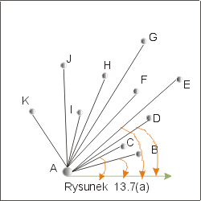
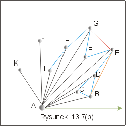
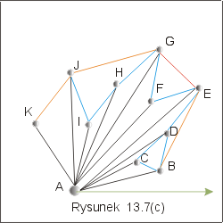
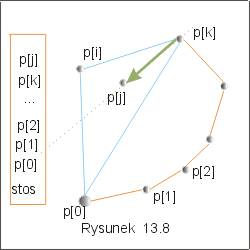

| « poprzedni punkt | nastêpny punkt » |
Algorytm Grahama rozwi±zywania
problemu otoczki, znajduje nie tylko zbiór wierzcho³ków wielok±ta tworz±cego
otoczkê, ale tak¿e podaje kolejno¶æ, w jakiej te wierzcho³ki wystêpuj± na
obwodzie wielok±ta.
Metoda zastosowana w algorytmie
korzysta z trzech obserwacji:
W metodzie Grahama, otoczkê budujemy metod± kolejnych prób, rezygnuj±c ewentualnie z wcze¶niej wybranych punktów, je¶li oka¿e siê, ¿e nie mog± one byæ wierzcho³kami otoczki. Do zapamiêtania kolejnych wyborów, algorytm Grahama u¿ywa stosu. Po zakoñczeniu dzia³ania algorytmu, na stosie znajduj± siê wszystkie wierzcho³ki szukanej otoczki wypuk³ej CH(Q) w kolejno¶ci ich wystêpowania na obwodzie wielok±ta.
Szkic
Algorytmu
| GrahamCH |
(Q: zbiór){ |
| 1. |
Wybierz punkt o najmniejszej warto¶ci
wspó³rzêdnej y i, je¶li takich punktów jest wiêcej ni¿ jeden, o
najmniejszej wspó³rzêdnej x. Niech to bêdzie p[0]. |
| 2. | Uporz±dkuj pozosta³e punkty qÎQ ze wzglêdu na k±t jaki tworzy wektor p[0],q z dodatnim kierunkiem osi OX. Je¶li kilka punktów tworzy ten sam k±t, to usuñ wszystkie z wyj±tkiem punktu najbardziej oddalonego od p[0] (tzn. takiego, który ma najwiêksz± wspó³rzêdn± y). |
| Niech p[1],..., p[n] bêdzie uzyskanym ci±giem punktów i niech s bêdzie stosem pustym. | |
| |
|
| 3. |
s := push(p[0],s); s:= push(p[1],s); s:= push(p[2],s); |
| for i := 3 to n do |
|
| while (p[i] le¿y na prawo od prostej
utworzonej przez dwa punkty ostatnio w³o¿one na stos ) do |
|
| s := pop(s) | |
| od; | |
| s := push(s,p[i]); |
|
| od } |
Wprawdzie w drugim kroku algorytmu jest mowa o porównywaniu k±tów, ale nie jest
konieczne ich obliczanie. Wystarczy nam informacja, który z nich jest mniejszy.
To jednak mo¿emy wyliczyæ badaj±c iloczyn wektorowy, tak jak w punkcie 2 tego
wyk³adu.
Przyk³ad 4.1
Rozwa¿my zbiór punktów przedstawiony na rysunku 13.7. Zgodnie z opisan± metod± wybierzemy, jako punkt p[0], punkt A. Na rysunku 13.7(a) zaznaczono k±ty, ze wzglêdu na które zbiór zosta³ uporz±dkowany. Aby stwierdziæ np. ¿e k±t jaki tworzy odcinek EA z dodatnim kierunkiem osi X, jest wiêkszy ni¿ k±t jaki tworzy odcinek BA z dodatni± pó³osi± X, wystarczy stwierdziæ, ¿e punkt E le¿y na lewo od odcinka BA. W trzecim kroku algorytmu na stos trafiaj± punkty A, B, C. Te trzy punkty tworz± wielok±t wypuk³y. Teraz przegl±damy wszystkie pozosta³e punkty, aby stwierdziæ, czy le¿± one na lewo od ostatnio znalezionej krawêdzi. W naszym przyk³adzie, punkt D le¿y na prawo od odcinka BC. Musimy wiêc zrezygnowaæ z ostatnio wpisanego na stos punktu C. Poniewa¿ D le¿y na lewo od odcinka AB wiêc dopiszemy D do stosu tworz±c krawêd¼ wielok±ta. Nastêpnym rozwa¿anym punktem jest E. Znów stwierdzimy, ¿e E znajduje siê na prawo od BD, a wiêc musimy usun±æ ze stosu punkt D. Punkt B znów pozostaje, bo E znajduje siê na lewo od odcinka AB. Stos zawiera teraz punkty A, B, E, a rozwa¿anym punktem jest w tej chwili punkt F. itd... Gdy dojdziemy do punktu J stos bêdzie zawiera³ punkty ABEGHI. Poniewa¿ J znajduje siê na prawo od HI oraz na prawo od GH , ale na lewo od krawêdzi EG, wiêc musimy wycofaæ ze stosu kolejno I oraz H, a na ich miejsce wpisaæ wierzcho³ek J.
|  |  |  |
Poprawno¶æ
algorytmu Grahama
Niech CH(Q) bêdzie zbiorem poszukiwanych wierzcho³ków otoczki wypuk³ej zbioru Q.
1. Punkty, które zosta³y usuniête ze
stosu nie nale¿± do otoczki wypuk³ej CH(Q).
Przypu¶æmy, ¿e w i-tej iteracji pêtli "while" punkt p[j] jest
usuwany ze stosu, bo aktualnie rozwa¿any punkt p[i] le¿y na prawo
od prostej wyznaczonej przez dwa ostatnio w³o¿one na stos punkty p[k] i p[j] (por.
rysunek 13.8). Punkty p[i], p[0], p[k] nie s±
wspó³liniowe, bo k±ty jakie tworz± wektory p[0]p[i] oraz p[0]p[k] z dodatnim kierunkiem
osi OX s± ró¿ne (krok 2 ). Wynika st±d, ¿e mo¿na utworzyæ trójk±t
D(p[i],p[0],p[k]), w którego wnêtrzu znajduje siê punkt
p[j]. Zatem p[j] nie
mo¿e byæ wierzcho³kiem budowanej otoczki wypuk³ej CH(Q) i dlatego mo¿emy go
usun±æ ze stosu.
|  |
2. Punkt, który zosta³ do³±czony do
stosu tworzy razem z innymi na stosie, wielok±t wypuk³y.
Zauwa¿my najpierw, ¿e do³±czaj±c do wielok±ta wypuk³ego dowolny
punktu z zakreskowanych na rysunku 13.9 obszarów, otrzymujemy nadal
wielok±t wypuk³y. Niech ostatnio w³o¿onymi na stos punktami bêd± p[k] i p[j].
Zgodnie z wykonanym testem, punkt p[i] zostanie
do³±czony do stosu, gdy le¿y po lewej stronie wektora p[k]p[j].
Poniewa¿
ponadto k±t jaki tworzy wektor
p[0]p[i] z dodatnim kierunkiem osi OX jest wiêkszy ni¿ k±t jaki
tworzy wektor p[0]p[j], mamy gwarancjê, ¿e do³±czany punkt nale¿y do obszaru
bezpiecznego. Punkty znajduj±ce siê na stosie tworzyæ bêd± wielok±t
wypuk³y.
|
|
Niezmiennik: zbiór punktów
znajduj±cy siê na stosie tworzy wielok±t wypuk³y, a wszystkie, do tej
pory przejrzane, punkty zbioru Q znajduj± siê albo wewn±trz, albo na
jego brzegach.
Poniewa¿ przed wykonaniem pêtli for niezmiennik jest spe³niony i
jest spe³niony, gdy do³±czamy nowy wierzcho³ek oraz po wykonaniu pêtli "while", zatem po zakoñczeniu pêtli
"for" te¿ jest spe³niony. Zbiór punktów
na stosie tworzy otoczkê wypuk³± danego zbioru punktów Q.
Pytanie 5: Je¿eli wszystkie punkty zbioru Q znajduj± siê na obwodzie ko³a,
to ile razy w algorytmie Grahama konstrukcji otoczki wypuk³ej dla zbioru Q
wykonamy operacjê pop usuwania elementu w³o¿onego na stos?
| « poprzedni punkt | nastêpny punkt » |